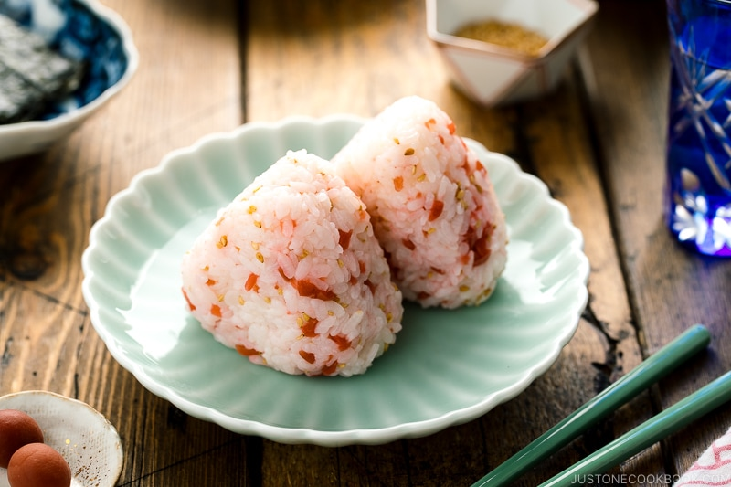

Plum Riceball

Image and Recipe Credit: Just One Cookbook
Description
The perfect picnic food!
This recipe is from Just One Cookbook.
See the full recipe here.
Ingredients
- 1.5 lb cooked Japanese short-grain rice (this is the total amount of rice made from 2 rice cooker cups (360 ml) of uncooked short-grain rice)
- 3.5 oz pickled plums (ko ume)
- 2 Tbsp toasted white sesame seeds
- 1 tsp kosher salt (Diamond Crystal; use half for table salt)
- 3 sheets nori (dried laver seaweed) (Cut the nori sheets in thirds)
Steps
- Gather all the ingredients.
- Remove and discard the seeds from pickled plums.
- Mince the plums with a sharp knife.
- Add the chopped pickled plums and sesame seeds to the steamed rice.
- With a rice paddle, mix well together using a cutting motion. Don’t make it mushy. Roughly divide the rice into 6 or 8 equal portions.
- Prepare a bowl of water and a bowl of kosher salt. Wet both hands and then dip 2 fingertips in the salt and spread between your palms.
- Scoop the rice onto your palm. Gently press and form the rice into a triangle. I use three fingers (thumb, index finger, middle finger) to make a triangle corner.
- When you press, your hands should be just firm enough so the rice ball doesn't fall apart. You don't want to squeeze the rice too tight.
- Wrap the rice ball with nori seaweed. Enjoy!